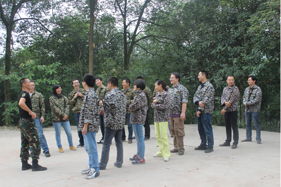
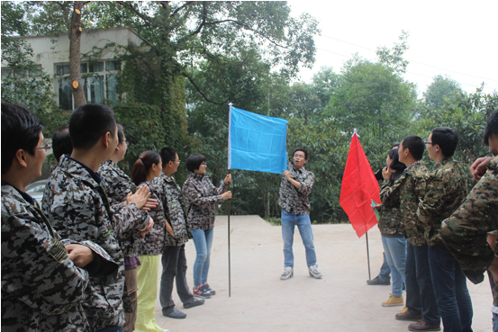

2014年户外野餐与拓展
2014年10月26日，Medicinae成都研发团队在成都市百工堰举行了户外野餐与素质拓展活动。活动内容主要有破冰起航，千里有缘，野炊，鼓动人心，真人CS等项目。整个拓展活动在欢声笑语之中伴随紧张刺激的活动，增强了团队执行力以及沟通协调能力。
活动地址——风景秀美的百工堰。
野炊活动大家齐动手，为了午餐各尽其职。野炊活动按组进行。通过“石头剪刀布”方法优先选取食材。两组分别烹饪出了自己的拿手好菜。
就这样，不知不觉间，一大桌子美食尽享口中。因为2组菜色均是色香味俱全，打成平手。
午餐后，进行破冰活动，分组列队，口号、队旗、队歌自然都是少不了的。


“所有人拉着鼓绳来颠一个皮球？”是的，鼓动人心活动开始了。看似简单的游戏需要大家齐心协力配合，集体跑动、集体统一高度。不断总结问题、调整人员配置。才能把球数越颠越多。
 鼓动人心红队大获全胜，于是他们开心的看着蓝队对他们进行膜拜了。
最后是真人CS活动，先是调试枪，探索地形。迅速进入丛林。开启对战模式，整个对战分为“夺旗战、营救人质、学员教官对战”
鼓动人心红队大获全胜，于是他们开心的看着蓝队对他们进行膜拜了。
最后是真人CS活动，先是调试枪，探索地形。迅速进入丛林。开启对战模式，整个对战分为“夺旗战、营救人质、学员教官对战”
 战斗结束，解救人质成功的喜悦。
总结整个活动——赞
战斗结束，解救人质成功的喜悦。
总结整个活动——赞
版权所有 Copyright2012 北京美迪希兰数据有限公司 京ICP 备 12013701号 - 2